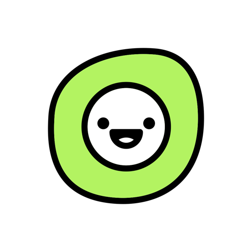

1. Питання по колу
Хтось читає питання вголос, відповідають усі по черзі, потім читає наступний. Правило одне: кожен може один раз за вечір сказати «пас». Працює в будь-якій компанії, від трьох людей.

TogethisTogethis › Гра для компанії без реквізиту
Найпростіша гра для компанії без реквізиту — питання по колу: одна людина читає питання, відповідають усі по черзі. Не потрібні ні карти, ні дошка, ні підготовка — лише добрі питання, які витягують історії. Нижче — 5 форматів такої гри і 24 питання: від легкого розігріву до щирої розмови.
Хтось читає питання вголос, відповідають усі по черзі, потім читає наступний. Правило одне: кожен може один раз за вечір сказати «пас». Працює в будь-якій компанії, від трьох людей.
Ведучий читає: «Хто з нас найімовірніше проспить власне весілля?» — і на рахунок «три» всі одночасно показують пальцем на когось. Той, на кого показали найбільше, пояснює, чому так вийшло. Найкраще для великої компанії: відповідають усі одночасно.
Кожен по черзі каже про себе три факти, один із яких вигаданий. Решта голосують, що неправда. Потім автор розповідає справжні історії — і саме вони запам'ятовуються.
Версія без алкоголю: усі тримають п'ять пальців. Хтось каже «Я ніколи не…» і щось, чого не робив. Хто робив — загинає палець і коротко розповідає, як це було. Хто перший загне всі пальці — обирає наступне питання для всіх.
Одна людина дві хвилини відповідає на питання від усієї компанії — швидко й без довгих роздумів. Потім стілець переходить до наступного. Добре для компанії, де не всі добре знайомі.
Питання взяті з безкоштовної стартової колоди «Для друзів» і безкоштовної частини колоди «Для компанії» застосунку Togethis. Їх зручно ставити по черзі, від першого до останнього: так розмова поступово стає глибшою.
Легкі питання, на які відповідає кожен — щоб компанія розговорилась.
Тут починаються історії, які потім переказують на кожній зустрічі.
Коли компанія вже розігріта і хочеться справжньої розмови.
У застосунку Togethis такі питання зібрані в колоди: одна картка на екрані, свайп — наступне питання, телефон лежить посередині столу. Стартова колода «Для друзів» — 50 питань, повністю безкоштовна. Колода «Для компанії» — понад 30 питань з історіями, зізнаннями й трохи здорового абсурду, плюс картки-дії, які міняють ритм вечора.
Стартова колода з 50 питань безкоштовна. Інші колоди — разова покупка без підписки, перші 6 карток кожної можна спробувати безкоштовно. Українською та англійською.
Найкраще від трьох до восьми. У більшій компанії питання по колу затягуються — краще розділитися на дві групи або грати у форматі «Хто з нас найімовірніше», де всі відповідають одночасно.
Так, у списку немає питань 18+ — їх можна ставити за столом із батьками й підлітками. Для вечора кількох поколінь є окрема колода «Для сім'ї» в застосунку Togethis.
Так. У відеодзвінку один ведучий читає питання вголос або показує екран, а відповідають по черзі. Формати «Дві правди й одна вигадка» та «Я ніколи не…» теж добре працюють онлайн.
36 питань, щоб закохатися: повний список і як грати — експеримент психолога Артура Арона для двох людей.
50 питань для пари, щоб поговорити глибше — коли хочеться поговорити вдвох.